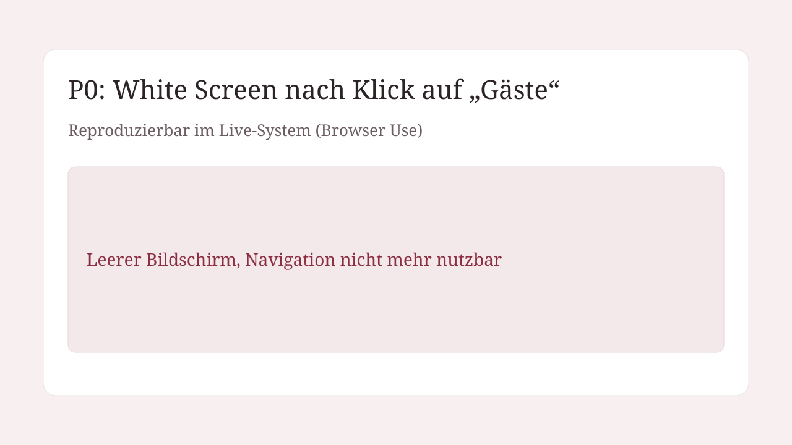
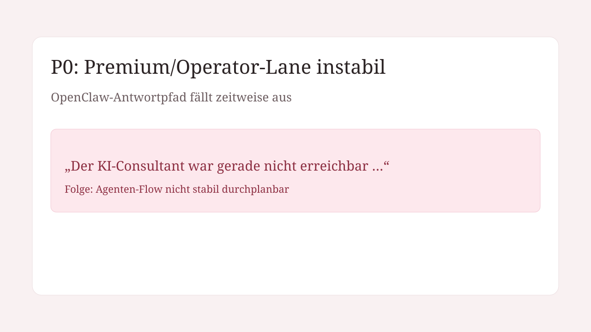
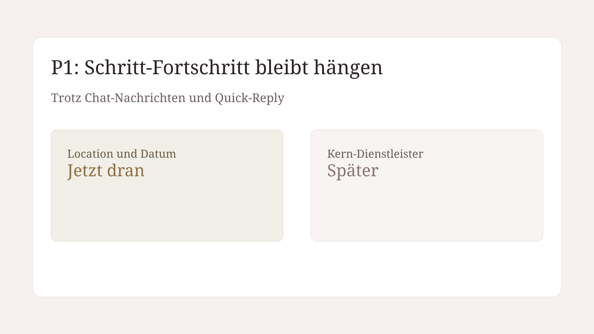
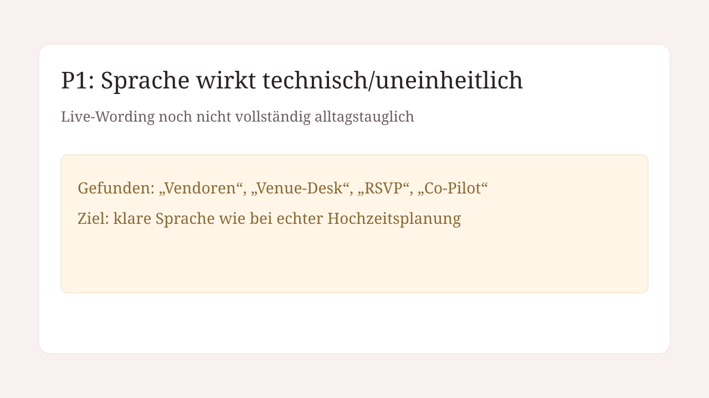

White Screen bei „Gäste“
Klick auf den linken Menüpunkt „Gäste“ führt reproduzierbar zu einer leeren Seite.

Stand: 3. April 2026 · Browser-Use-first Audit · OpenClaw Chat-Lane geprüft
Klick auf den linken Menüpunkt „Gäste“ führt reproduzierbar zu einer leeren Seite.

Fehlerbanner: „Der KI-Consultant war gerade nicht erreichbar …“.

Selbst nach „weiter zu den Vendoren“ bleibt der aktive Schritt oft unverändert.

Live-Texte enthalten weiter technische Begriffe wie „Vendoren“, „Venue-Desk“, „RSVP“.

Ziel: mindestens 50% geplant über den Agenten-Chat.
Aktuell live verifiziert: nicht erreichbar, weil P0/P1-Blocker die stabile Schrittfortschaltung verhindern.